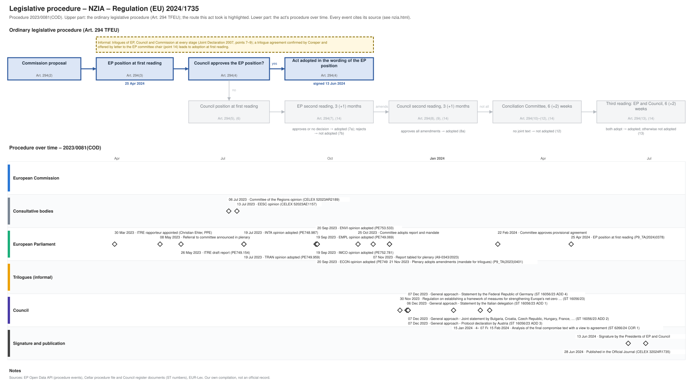

← Regulation timeline › NZIA › Legislative procedure · All procedures
Procedure 2023/0081(COD), completed. Drawing: SVG · PNG · PDF (A3) · draw.io · Page as Markdown: nzia.md
| Stage | Completed, published 28 Jun 2024 |
|---|---|
| Latest activity | 28 Jun 2024 · Signature and publication: Published in the Official Journal (CELEX 32024R1735) |

| Date | Actor | Event | Document | Source |
|---|---|---|---|---|
| 2023-03-30 | European Parliament | ITRE rapporteur appointed (Christian Ehler, PPE) | EP procedure file | EP Open Data API, procedure 2023-0081 (participation RAPPORTEUR) |
| 2023-05-08 | European Parliament | Referral to committee announced in plenary | EP procedure file | EP Open Data API, procedure 2023-0081 (REFERRAL) |
| 2023-05-26 | European Parliament | ITRE draft report | PE749.154 | EP Open Data API, procedure 2023-0081 (COMMITTEE_TABLING_REPORT) |
| 2023-07-06 | Consultative bodies | Committee of the Regions opinion | CELEX 52023AR2189 | Cellar procedure file 2023/81 |
| 2023-07-13 | Consultative bodies | EESC opinion | CELEX 52023AE1157 | Cellar procedure file 2023/81 |
| 2023-07-19 | European Parliament | INTA opinion adopted | PE748.987 | EP Open Data API, procedure 2023-0081 (COMMITTEE_ADOPTING_OPINION) |
| 2023-07-19 | European Parliament | TRAN opinion adopted | PE749.959 | EP Open Data API, procedure 2023-0081 (COMMITTEE_ADOPTING_OPINION) |
| 2023-09-19 | European Parliament | EMPL opinion adopted | PE749.069 | EP Open Data API, procedure 2023-0081 (COMMITTEE_ADOPTING_OPINION) |
| 2023-09-19 | European Parliament | IMCO opinion adopted | PE752.781 | EP Open Data API, procedure 2023-0081 (COMMITTEE_ADOPTING_OPINION) |
| 2023-09-20 | European Parliament | ENVI opinion adopted | PE753.533 | EP Open Data API, procedure 2023-0081 (COMMITTEE_ADOPTING_OPINION) |
| 2023-09-20 | European Parliament | REGI opinion adopted | PE753.568 | EP Open Data API, procedure 2023-0081 (COMMITTEE_ADOPTING_OPINION) |
| 2023-09-20 | European Parliament | ECON opinion adopted | PE749.279 | EP Open Data API, procedure 2023-0081 (COMMITTEE_ADOPTING_OPINION) |
| 2023-10-25 | European Parliament | Committee adopts report and mandate | EP procedure file | EP Open Data API, procedure 2023-0081 (COMMITTEE_ADOPTING_REPORT) |
| 2023-11-07 | European Parliament | Report tabled for plenary | A9-0343/2023 | EP Open Data API, procedure 2023-0081 (TABLING_PLENARY) |
| 2023-11-21 | European Parliament | Plenary refers back for trilogues | EP procedure file | EP Open Data API, procedure 2023-0081 (PLENARY_REFER_COMMITTEE_INTERINSTITUTIONAL_NEGOTIATIONS) |
| 2023-11-21 | European Parliament | Plenary adopts amendments (mandate for trilogues) | P9_TA(2023)0401 | EP Open Data API, procedure 2023-0081 (PLENARY_AMEND) |
| 2023-11-30 | Council | Regulation on establishing a framework of measures for strengthening Europe’s net-zero … | ST 16056/23 | Cellar procedure file 2023/81 (Council register) |
| 2024-01-15 | Council | 4-column document | ST 5334/24 | Cellar procedure file 2023/81 (Council register) |
| 2024-02-07 | Council | Analysis of the final compromise text with a view to agreement | ST 6266/24 | Cellar procedure file 2023/81 (Council register) |
| 2024-02-15 | Council | Analysis of the final compromise text with a view to agreement | ST 6266/24 COR 1 | Cellar procedure file 2023/81 (Council register) |
| 2024-02-22 | European Parliament | Committee approves provisional agreement | EP procedure file | EP Open Data API, procedure 2023-0081 (COMMITTEE_APPROVE_PROVISIONAL_AGREEMENT) |
| 2024-04-25 | European Parliament | EP position at first reading (Art. 294(3) TFEU) | P9_TA(2024)0378 | EP Open Data API, procedure 2023-0081 (PLENARY_AMEND_PROPOSAL) |
| 2024-06-13 | Signature and publication | Signature by the Presidents of EP and Council | EP procedure file | EP Open Data API, procedure 2023-0081 (SIGNATURE) |
| 2024-06-28 | Signature and publication | Published in the Official Journal | CELEX 32024R1735 · en.md de.md | EP Open Data API, procedure 2023-0081 (PUBLICATION_OFFICIAL_JOURNAL) |
Every document the Council register, the EU database of the Parliament of Austria or the EP lists for the procedure, with its state: public documents link to the official file; documents that are not public link to their entry in the Austrian database where there is one (metadata only). "Unofficially leaked": a copy is known to circulate outside the institutions; it is not published here.
| Date | Document | Kind | Subject | Status | Text |
|---|---|---|---|---|---|
| 2023-03-20 | ST 7613/23 | council-transmission | Proposal for a REGULATION OF THE EUROPEAN PARLIAMENT AND OF THE COUNCIL on establishing a framework of measures for strengthening Europe’s net-zero technology … | public status unknown | – |
| 2023-03-20 | ST 7613/23 ADD 1 | council-transmission | ANNEXES to the proposal for a Regulation of the European Parliament and of the Council on establishing a framework of measures for strengthening Europe’s … | public status unknown | – |
| 2023-03-23 | ST 7613/23 ADD 2 | council-transmission | COMMISSION STAFF WORKING DOCUMENT Investment needs assessment and funding availabilities to strengthen EU's Net-Zero technology manufacturing capacity | public status unknown | – |
| 2023-05-12 | ST 7613/23 REV 1 | council-transmission | public status unknown | – | |
| 2023-05-16 | ST 9482/23 | council-note | Technologies scope and related benefits in the Net Zero Industry Act proposal - Information from the Commission | public status unknown | – |
| 2023-05-17 | ST 9482/23 REV 1 | council-note | Technologies scope and related benefits in the Net Zero Industry Act proposal - Information from the Commission | public status unknown | – |
| 2023-05-26 | PE749.154 | ep-draft-report | DRAFT REPORT on the proposal for a regulation of the European Parliament and of the Council on establishing a framework of measures for strengthening Europe’s … | public | – |
| 2023-05-31 | PE749.069 | ep-draft-opinion | DRAFT OPINION on the proposal for a regulation of the European Parliament and of the Council on establishing a framework of measures for strengthening Europe’s … | public | – |
| 2023-06-01 | PE748.987 | ep-draft-opinion | DRAFT OPINION on the proposal for a regulation of the European Parliament and of the Council Establishing a framework of measures for strengthening Europe’s … | public | – |
| 2023-06-06 | PE749.279 | ep-draft-opinion | DRAFT OPINION on the proposal for a regulation of the European Parliament and of the Council on establishing a framework of measures for strengthening Europe’s … | public | – |
| 2023-06-06 | ST 10175/23 | council-note | Optional consultation of the Committee of the Regions | public status unknown | – |
| 2023-06-16 | ST 10706/23 | council-note | Reasoned opinion on the application of the Principles of Subsidiarity and Proportionality | public status unknown | – |
| 2023-06-20 | ST 10870/23 | council-transmission | COMMISSION STAFF WORKING DOCUMENT for a Regulation of the European Parliament and of the Council on establishing a framework of measures for strengthening … | public status unknown | – |
| 2023-06-22 | PE749.959 | ep-draft-opinion | DRAFT OPINION on the proposal for a regulation of the European Parliament and of the Council on establishing a framework of measures for strengthening Europe’s … | public | – |
| 2023-07-06 | CELEX 52023AR2189 | opinion | Opinion of the European Committee of the Regions – The Net-Zero Industry Act | public | – |
| 2023-07-13 | CELEX 52023AE1157 | opinion | Opinion of the European Economic and Social Committee on ‘a) Communication from the Commission to the European Parliament, the European Council, the Council, … | public | – |
| 2023-07-19 | ST 12012/23 | council-transmission | Net Zero Industry Act proposal and Commission communication on the Green Deal Industrial Plan - Opinion of the European Economic and Social Committee (EESC) | public status unknown | – |
| 2023-07-20 | PE748.987 | ep-opinion | OPINION on the proposal for a regulation of the European Parliament and of the Council Establishing a framework of measures for strengthening Europe’s net-zero … | public | – |
| 2023-07-20 | PE749.959 | ep-opinion | OPINION on the proposal for a regulation of the European Parliament and of the Council on establishing a framework of measures for strengthening Europe’s … | public | – |
| 2023-07-25 | ST 12167/23 | council-transmission | Opinion of the European Committee of the Regions | public status unknown | – |
| 2023-08-02 | ST 12285/23 | council-transmission | Opinion of the Parliament of Ireland on the application of the Principles of Subsidiarity and Proportionality | public status unknown | – |
| 2023-09-20 | PE752.781 | ep-opinion | OPINION on the proposal for a regulation of the European Parliament and of the Council on establishing a framework of measures for strengthening Europe’s … | public | – |
| 2023-09-26 | PE753.533 | ep-opinion | OPINION on the proposal for a regulation of the European Parliament and of the Council on establishing a framework of measures for strengthening Europe's … | public | – |
| 2023-09-26 | PE753.568 | ep-opinion | OPINION on the proposal for a regulation of the European Parliament and of the Council on establishing a framework of measures for strengthening Europe’s … | public | – |
| 2023-10-09 | PE749.069 | ep-opinion | OPINION on the proposal for a regulation of the European Parliament and of the Council on establishing a framework of measures for strengthening Europe’s … | public | – |
| 2023-10-09 | PE749.279 | ep-opinion | OPINION on the proposal for a regulation of the European Parliament and of the Council on establishing a framework of measures for strengthening Europe’s … | public | – |
| 2023-11-07 | A9-0343/2023 | ep-report | REPORT on the proposal for a regulation of the European Parliament and of the Council on establishing a framework of measures for strengthening Europe’s … | public | – |
| 2023-11-21 | P9_TA(2023)0401 | ep-position | Framework of measures for strengthening Europe’s net-zero technology products manufacturing ecosystem (Net Zero Industry Act) | public | – |
| 2023-11-30 | ST 16056/23 | council-position | Regulation on establishing a framework of measures for strengthening Europe’s net-zero technology products manufacturing ecosystem (Net Zero Industry Act) - … | public | – |
| 2023-12-06 | ST 16056/23 ADD 1 | council-position | General approach - Statement by the Italian delegation | public | – |
| 2023-12-07 | ST 16056/23 ADD 2 | council-position | General approach - Joint statement by Bulgaria, Croatia, Czech Republic, Hungary, France, Poland, Romania, Slovakia, Slovenia | public | – |
| 2023-12-07 | ST 16056/23 ADD 3 | council-position | General approach - Protocol declaration by Austria | public | – |
| 2023-12-07 | ST 16056/23 ADD 4 | council-position | General approach - Statement by the Federal Republic of Germany | public | – |
| 2023-12-07 | ST 16521/23 | council-note | Outcome of proceedings | public status unknown | – |
| 2024-01-15 | ST 5334/24 | trilogue | 4-column document | public | – |
| 2024-02-07 | ST 6266/24 | agreed-text | Analysis of the final compromise text with a view to agreement | public | – |
| 2024-02-15 | ST 6266/24 COR 1 | agreed-text | Analysis of the final compromise text with a view to agreement | public | – |
| 2024-02-16 | ST 6266/24 ADD 1 | agreed-text | Analysis of the final compromise text with a view to agreement - Statement by Austria | not public; Council register checked daily since 2026-09-25 | – |
| 2024-02-16 | ST 6269/24 | council-note | Letter to the Chair of the ITRE Committee of the European Parliament | public status unknown | – |
| 2024-03-11 | PE 45/24 | council-note | REGULATION OF THE EUROPEAN PARLIAMENT AND OF THE COUNCIL on establishing a framework of measures for strengthening Europe’s net-zero technology manufacturing … | public status unknown | – |
| 2024-04-25 | P9_TA(2024)0378 | ep-position | Framework of measures for strengthening Europe’s net-zero technology products manufacturing ecosystem | public | – |
| 2024-04-30 | ST 9218/24 | council-note | Outcome of the European Parliament's first reading (Strasbourg, 22 to 25 April 2024) | public status unknown | – |
| 2024-05-21 | ST 9275/24 | council-note | Draft REGULATION OF THE EUROPEAN PARLIAMENT AND OF THE COUNCIL on establishing a framework of measures for strengthening Europe’s net-zero technology … | public status unknown | – |
| 2024-05-22 | ST 9275/24 ADD 1 | council-note | Draft REGULATION OF THE EUROPEAN PARLIAMENT AND OF THE COUNCIL on establishing a framework of measures for strengthening Europe’s net-zero technology … | public status unknown | – |
| 2024-05-24 | ST 9275/24 COR 1 | council-note | public status unknown | – | |
| 2024-05-24 | ST 9275/24 COR 2 | council-note | public status unknown | – | |
| 2024-05-27 | ST 9275/24 REV 1 | council-note | Draft REGULATION OF THE EUROPEAN PARLIAMENT AND OF THE COUNCIL on establishing a framework of measures for strengthening Europe’s net-zero technology … | public status unknown | – |
| 2024-05-28 | ST 10388/24 | council-note | Voting result Regulation of the European Parliament and of the Council on establishing a framework of measures for strengthening Europe’s net-zero technology … | public status unknown | – |
| 2024-06-14 | PE 45/24 REV 1 | council-note | REGULATION OF THE EUROPEAN PARLIAMENT AND OF THE COUNCIL ON ESTABLISHING A FRAMEWORK OF MEASURES FOR STRENGTHENING EUROPE’S NET-ZERO TECHNOLOGY MANUFACTURING … | public status unknown | – |
Unofficial Markdown conversions for reading, searching and project folders; only the official document is authentic. "Read" opens the rendered text on GitHub, where a link to a provision (#art-13, #rec-12, #annex-i) jumps to it.
| Date | Stage | Document | Markdown | Read |
|---|---|---|---|---|
| 2024-06-28 | oj | CELEX 32024R1735 | en de | GitHub |
| 2025-02-05 | corrigendum | CELEX 32024R1735R(01) | en de | GitHub |
| 2025-10-27 | corrigendum | CELEX 32024R1735R(02) | de | GitHub |
Standardisation requests (Art. 10 of Regulation (EU) No 1025/2012) ask CEN, CENELEC and ETSI to draft harmonised standards in support of the act; standards cited in the Official Journal give a presumption of conformity. Planned requests come from the Commission's annual Union work programmes for European standardisation (Art. 8), which are plans, not decisions. Deadlines as set in the request's annexes (hand-checked).
| Year | Action (open for its text) |
|---|---|
| 2024 | 43. Transport and permanent storage of carbon dioxide
Work programme 2024, Annex, Action 43: en.md · de.md · original on EUR-Lex ↗ |
| 2025 | 22. Transport and permanent storage of carbon dioxide
Work programme 2025, Annex, Action 22: en.md · de.md · original on EUR-Lex ↗ |
| 2025 | 55. Qualification of small modular reactor materials
Work programme 2025, Annex, Action 55: en.md · de.md · original on EUR-Lex ↗ |
| 2026 | 8. Small and advanced modular reactors: technology and safety
Work programme 2026, Annex, Action 8: en.md · de.md · original on EUR-Lex ↗ |
Comitology committees of Member State representatives give opinions on draft implementing acts (Regulation (EU) No 182/2011); expert groups advise the Commission on delegated acts, guidance and implementation; groups set up by an act itself (e.g. the NIS Cooperation Group) bring together the Member States, the Commission and agencies. Meetings and documents as published in the Comitology Register, the Register of Commission expert groups and on the Commission's pages of these groups, from 2024 on.
Comitology committee C51000, ENER; examination procedure (Art. 5, 6 and 7 of Regulation (EU) No 182/2011). Official source: Comitology Register ↗
Comitology committee C129000, GROW; examination procedure (Art. 5, 6 and 7 of Regulation (EU) No 182/2011). Official source: Comitology Register ↗
Comitology committee C16300, GROW; examination procedure (Art. 5, 6 and 7 of Regulation (EU) No 182/2011). Official source: Comitology Register ↗
Expert group E03968, ENER, GROW. Official source: Register of Commission expert groups ↗
| Date | Meeting | Documents |
|---|---|---|
| 2025-04-09 | Expert Group on Net-zero Technologies and Supply Chains | minutes |
| 2025-04-09 | Invitation to the meeting of the Expert Group on net-zero technologies and supply chains | minutes · other document · other document · other document · other document · other document · other document |
| 2025-02-12 | Expert Group on Net-Zero Technologies and Supply Chains | minutes |
| 2025-02-12 | Meeting of the Expert Group on net-zero technologies and supply chains - 12 February 2025 | agenda · minutes · draft delegated act · draft delegated act · working document · other document |
| 2024-09-30 | 1st Meeting NZIA Expert Group | agenda · minutes |